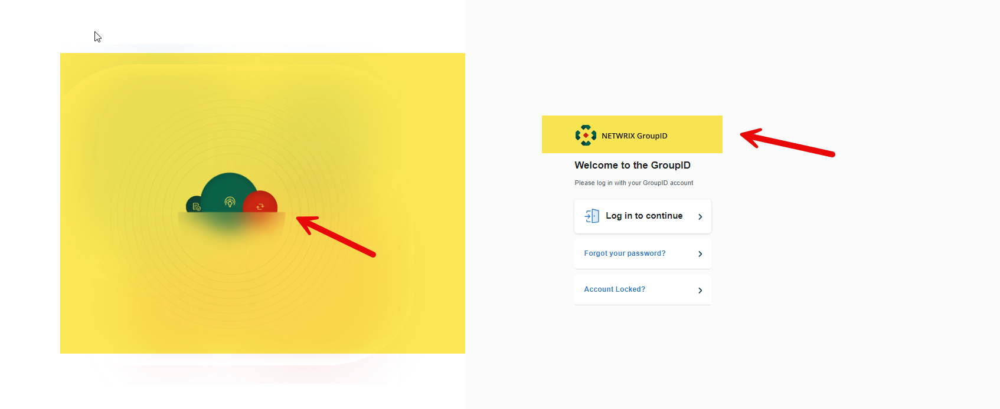
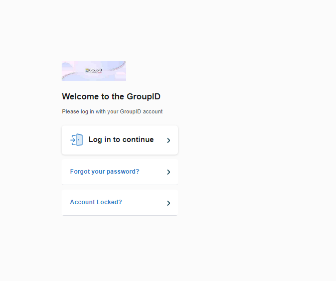
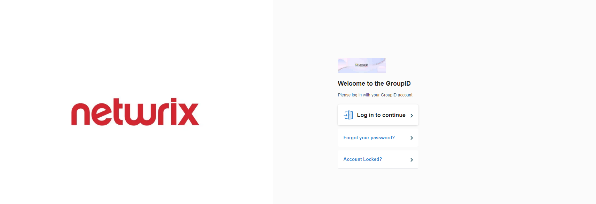

Question
Can you replace the logo and picture on the landing page of the Netwrix Directory Manager (formerly Netwrix GroupID) portal?

Answer
Yes, this can be achieved by replacing the image files in the Directory Manager 11 folder.
-
To change the logo, go to
C:\Program Files\Imanami\GroupID 11.0\GroupIDPortal\Inetpub\*\Web\wwwroot\Content\Images. -
Replace the file named
imanami-logos-master-1@3x.webp. The replacement must have the same name, size, and extension.NOTE: Take a backup of the original file.
 -
To change the picture on the right side, go to
C:\Program Files\Imanami\GroupID 11.0\GroupIDPortal\Inetpub\*\Web\wwwroot\Content\Images. -
Replace the file named
groupid-3x.webp. The replacement must have the same name, size, and extension.NOTE: Take a backup of the original file.
